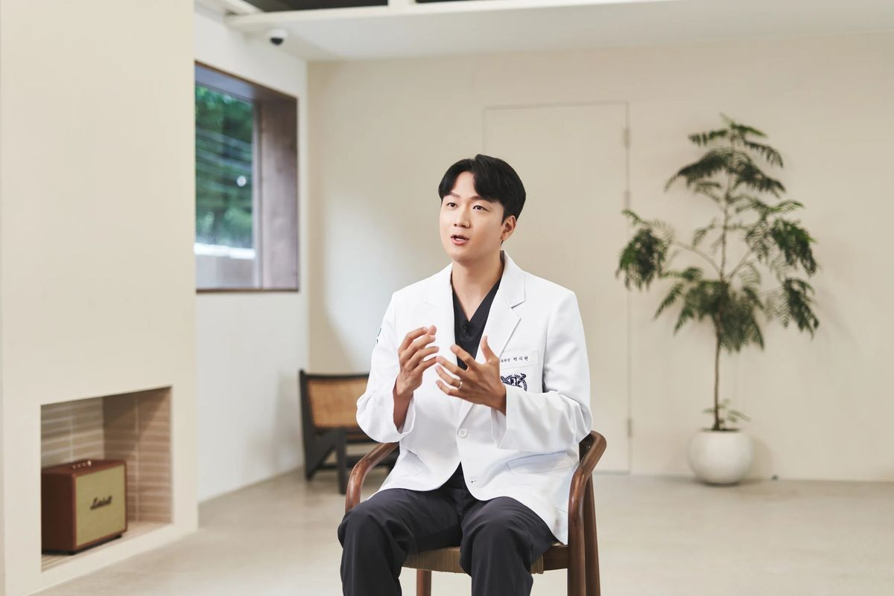
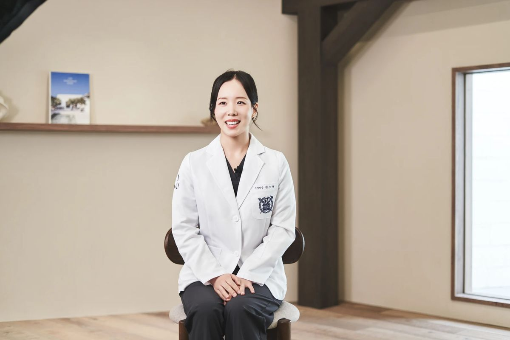
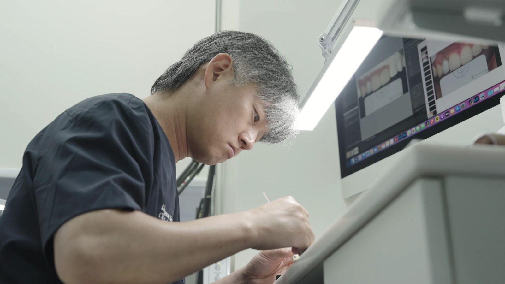

임플란트·발치3개 용어
빠진 치아를 되살리는 치료와 사랑니까지
서울이도치과 의료진이 진료실에서 다 하지 못한 설명을 치아백과와 원장 칼럼으로 정리했습니다. 치료를 정하기 전에 먼저 읽어보세요.
치료 이름을 알면 이름으로, 모르면 불편한 증상으로 찾아보세요.
상담에서 자주 듣는 말 20개를 진료 분야별로 정리했습니다. 용어를 누르면 쉬운 설명으로 이어집니다.
빠진 치아를 되살리는 치료와 사랑니까지
씌우고, 채우고, 연결하는 치료
충치부터 신경치료, 레진까지
양치할 때 피가 나거나 잇몸이 붓는다면
성인 교정부터 아이의 성장기 교정까지
턱에서 소리가 나거나 아침에 뻐근하다면
찬물에 시리거나 씹을 때 불편할 때
상담에서 자주 듣는 진단 용어
건강보험 적용 기준을 미리 확인
치료의 필요성과 환자의 건강·생활을 함께 살피는 관점을 정리했습니다.

치아 모양뿐 아니라 잇몸과 맞물림, 일상의 씹는 느낌까지 살펴봅니다.

어울리는 부분은 남기고 필요한 변화만 구분하는 심미치료의 기준입니다.
진료실에서 무엇을 물어볼지 미리 정리하면 상담 시간을 알차게 쓸 수 있습니다.

모니터로 사진과 X-ray를 함께 보며, 치료를 정하기 전에 충분히 설명합니다.

보철물을 병원 안에서 만들고 다듬어, 진료실과 바로 의견을 주고받습니다.

진료 전 기다리는 시간도 편안하도록 넓고 조용한 대기 공간을 두었습니다.
전문의 자격과 진료분야를 나누어 안내합니다. 원장별 진료일은 병원에 확인해 주세요.
진료시간 확인 중
| 월 · 목야간진료 | 09:30 – 20:30 |
|---|---|
| 화 · 수 · 금 | 09:30 – 18:30 |
| 토요일점심시간 없음 | 09:30 – 14:30 |
| 평일 점심 | 12:30 – 14:00 |
| 일요일 · 공휴일 | 휴진 |
글은 일반 정보이며, 개인의 진단과 치료를 대신하지 않습니다.
왜 임플란트를 권하는지, 견적에 어떤 항목이 들어 있는지, 치료 일정과 이후 관리는 어떻게 되는지 물어보세요. 실제 비용과 치료 계획은 진찰 후에 정해집니다.
임플란트 상담 준비 읽기치아백과의 시린이 설명에서 용어의 뜻과 상담 전에 확인할 질문을 볼 수 있습니다. 언제, 어느 쪽이 시린지 기억해 진료 때 알려주세요.
시린이 설명 읽기언제부터, 얼마나 자주 나는지 적어 오시면 상담이 빨라집니다. 잇몸 건강 글에서 일상의 불편을 정리하는 방법을 읽어보세요.
잇몸 건강 이야기원하는 색과 모양, 씹을 때의 느낌을 나누어 이야기해 보세요. 재료를 권하는 이유와 제작 과정, 관리 방법을 함께 확인하면 좋습니다.
보철 상담 이야기필요한 시기와 방법은 아이의 현재 치열과 턱 성장 상태를 본 뒤 정합니다. 성장기교정에 쓰이는 말과 상담에서 확인할 질문을 먼저 읽어보세요.
성장기교정 설명월요일과 목요일은 저녁 8시 30분까지 진료합니다. 차량은 신공덕 아이파크 지하주차장을 2시간 무료로 이용할 수 있으며, 등록 방법은 방문 시 안내해 드립니다.
방문 안내 보기